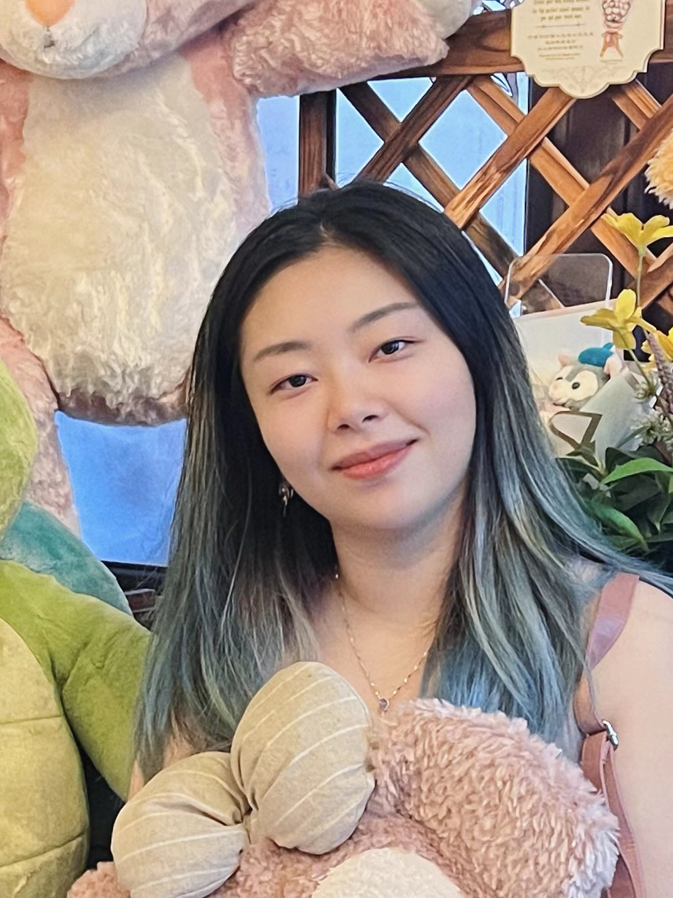

Alex J H Fedorec
Group leader
he/him
Alex J H Fedorec
Group leader
he/him
I am a new group leader (assistant professor/lecturer) in the Division of Biosciences
at University College London, UK. My research involves applying computational and
mathematical techniques to understand and engineer new biological systems. I
am particularly interested in biotherapeutic and bioindustrial applications of
biological engineering with a focus on creating stable and
predictable synthetic microbial communities in complex environments, such as
the gastrointestinal tract.
I was previously a Research Fellow in the
Computational Systems and Synthetic Biology
group in the Department of
Cell & Developmental Biology at University College London, UK.
I have a background in computer science and industrial experience as a
software engineer at Research in Motion (now BlackBerry).
Members
Alice Cook
PhD student 2023-
I am a PhD student on the London Interdisciplinary Biosciences Consortium DTP
(LIDo). My research will look at motility, patterning, and information
processing in cellular communities, as part of the Fedorec group at UCL and
the Bentley group at the Francis Crick Institute. Previously, I completed a
BASc in Arts and Sciences at UCL. I also completed a PhD rotation project in
the Pearce and Barnes groups at UCL looking at experimental and computational
design of self-organised patterning via chemical signalling in microbial
communities, and a further rotation project with the Logan group (King's
College London) and Bentley group on fibroblast, ECM, and muscle fibre
disorganisation in congenital limb abnormalities using wet-lab and agent-based
modelling approaches.

Yue (Casey) Chen
PhD student 2023-
I am a PhD student on the EPSCR CDT BioDesign Engineering program. I am
interested in using both wet-lab and dry-lab approaches to design and control
different aspects of microbial communities. Before joining the group, I worked
as a research assistant at the Chinese Academy of Sciences (SIAT), focusing on
the characterisation of a biofilm-derived conductive protein. I completed an
MRes in Systems and Synthetic Biology from Imperial College London and obtained
a BSc in Molecular Genetics from the University of Edinburgh.
Louie Destouches
PhD student 2023-
he/him
I am Louie and I grew up in France, near Paris. I moved to the UK for
my Bachelor's in Biological Sciences at the University of Exeter with one year
abroad at the Hong Kong University of Science and Technology. I returned to
Paris and worked one year in an analysis laboratory using TEM microscopy. On
the side, I pursued Aquaponics, a type of sustainable fish and plant
agriculture system, and built an installation for my local community garden. I
then graduated from a two-year Masters in Systems and Synthetic Biology at the
Université Paris Cité, and completed several placements at INRAE, Institut
Curie and Institut Pasteur. I was also team leader of the 2022 Paris-Bettencourt
team for the iGEM competition, where we endeavoured to create an interface
between bacterial genetics and electronics. I am now in my first year of PhD in
Alex Fedorex's lab group developing synthetically engineered microbial
communities for bioindustrial applications. In my free time I enjoy visiting
art exhibitions, reading and martial arts.
Alumni
- Paul Goodman MRes Synthetic Biology 2023-24
- Griffin Kiedaisch MSc Natural Sciences 2023-24
- Nunnapat (Mod) Jantorn BSc Biomedical Science 2023-24
- Renlong Xie BSc Biomedical Science 2023-24
- Samir Chitnavis LIDo rotation student 2023